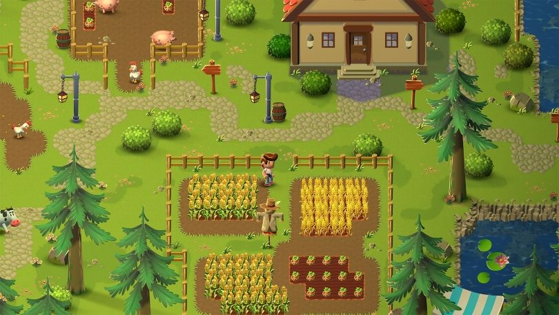
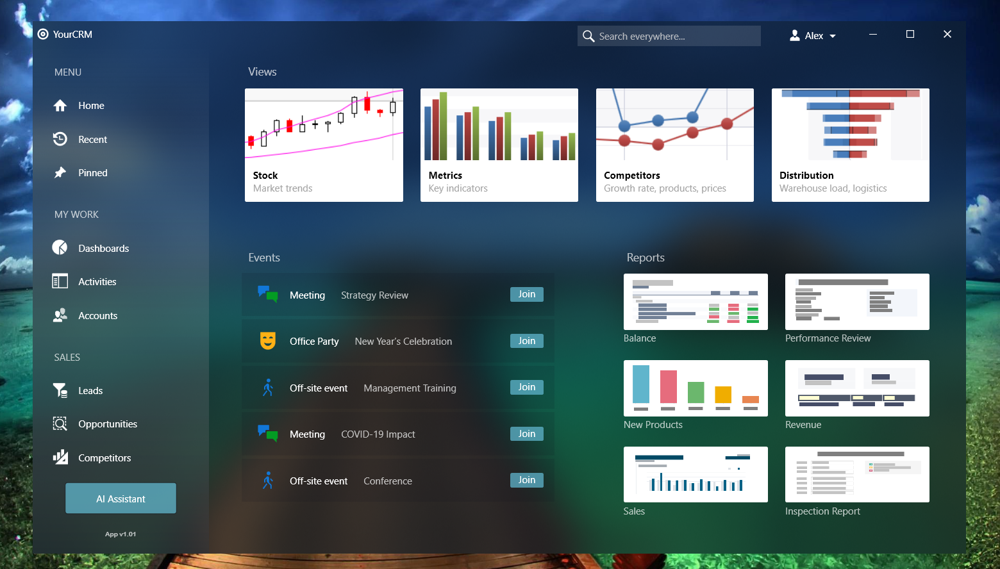

C# is a powerhouse for everything from enterprise apps to game dev. Level up your skills by building these projects and exploring how the pros structure their code on GitHub.
Project Ideas
ASP.NET Core Web API: Build a RESTful service for a book store or movie database.
Unity 2D Game: Create a platformer or top-down shooter using the Unity engine.
WPF Desktop Dashboard: Design a sleek Windows desktop app for system monitoring.
Discord Bot: Use Discord.NET to create an automated bot with custom commands.
SQL Database Manager: Build a tool to perform CRUD operations on a local SQL Server.
Project Visuals
ASP.NET Core API with Swagger

2D Game made in Unity

Modern WPF Desktop UI